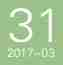

福建省沈郎油茶股份有限公司成立于2003年12月，总部设于三明市。
公司在福州、厦门两地分别设有分公司，拥有员工183人。
公司积极探索跨界融合之路，将工业文明植入旅游要素中，打造富有创意并具有地域特色的工业旅游项目，2016年获首批福建省观光工厂荣誉称号。



查看更多
公司在福州、厦门两地分别设有分公司，拥有员工183人。
公司积极探索跨界融合之路，将工业文明植入旅游要素中，打造富有创意并具有地域特色的工业旅游项目，2016年获首批福建省观光工厂荣誉称号。
查看更多